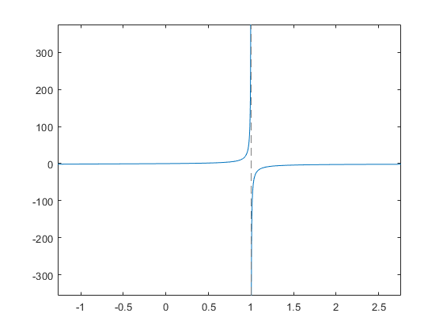

%Homework 10 %This script is used to find the mole fraction (x) of water (H2O) that %dissociates. The script used the falsePosition function to find the root %for the givin equation. The user will need to define k and pt to run the %script. %Created 2-22-2018 %Author: Corbyn Berg
%Define variables for the equation k = 0.05; %k is the constant for the reaction's equilibrium, and it is unitless. pt = 3; %pt is the pressure in atm of the mixture.
%Define equation that will be run. Use @(x) to set up an annonymous %varible, becasue we do not know what x is yet. f = @(x) x/(1-x)*sqrt((2*pt)/(2+x))-k;
%Now we plot f in order to get an idea of where the root is. This will help %us estimate an xl and xu (lower and upper guess),so we can use this %interval when we run falsePosition. fplot(f)
Warning: Function behaves unexpectedly on array inputs. To improve performance, properly vectorize your function to return an output with the same size and shape as the input arguments.
%Run the falsePosition function. List the outputs wanted, and also set the %window. Because I plotted f, I could tell that the root was most likely %near 0, so my window is small. [root,fx,ea,iter] = falsePosition(@(x) f(x),0,0.1);
iter =
1
iter =
2
iter =
3
iter =
4
iter =
5
iter =
6
root =
0.0282
%Print results fprintf('The x value that represents the mole fraction to satisfy the equation is %3f\n',root)
The x value that represents the mole fraction to satisfy the equation is 0.028249